Martes 3 de noviembre · Aprobado
Reconocer la máscara
Texto de la publicación
🎭 Hay un cansancio que no es del trabajo: es el de sostener una máscara.
La que todo lo resuelve. La que nunca se queja. La que se autoexige. La que busca aprobación. Esa máscara nació en una etapa dura, para sobrevivir, y funcionó. El problema empieza cuando la etapa termina y la máscara no.
✅ En la Ruta M.A.R.I.P.O.S.A. este paso se llama «reconocer la máscara»: no es arrancársela de un día para otro, es dejar de confundirla con su identidad. Hágase una sola pregunta esta semana: ¿qué sigo haciendo solo porque alguna vez me salvó?
📖 De eso trata «Bendito Desierto». Prelanzamiento: sábado 7 de noviembre en VOCES CR 2026; muy pronto, el lanzamiento oficial en librerías y radios cristianas.
📲 Y si quiere llevar esta conversación a su empresa, escríbanos al 8533-3516 o comente la palabra TEST.
El libro acompaña; no reemplaza la ayuda profesional.
Miércoles 4 de noviembre · Publicado
Llega tarde todos los días. ¿Lo despido?
Texto de la publicación
⏰ «Llega tarde todos los días. ¿Lo despido?» Mi respuesta: depende.
Este es un caso real que me tocó intervenir. Un colaborador excelente siempre llegaba 30 minutos tarde, y nadie se había atrevido a preguntarle por qué. Vivía lejos, salía de madrugada y su primer bus pasaba a las 6:00 a.m.; su entrada era a las 7:00.
✅ Bastó una conversación: se le movió la entrada a las 8:00 y sale una hora más tarde. Ganaron todos. Casos así se resuelven con liderazgo consciente y buena comunicación. Mirar completo no es justificarlo todo: es decidir bien.
En GTI acompañamos a las jefaturas en esas conversaciones.
📲 ¿Le gustaría llevar la experiencia de GTI a su empresa? Escríbanos al 8533-3516 o comente la palabra TEST.
Viernes 6 de noviembre · Por revisar
La conversación que lleva meses postergando
Texto de la publicación
🗣️ «Tengo que hablar con alguien de mi equipo y llevo meses postergándolo. ¿Qué hago?»
Esa conversación ya le está costando más que tenerla: el equipo entero ve lo mismo que usted, y ve que no pasa nada.
✅ No necesita valor, necesita estructura. Cuatro partes: 1️⃣ el hecho concreto (no «usted tiene mala actitud», sino «en las últimas tres reuniones interrumpió a sus compañeros»), 2️⃣ el impacto, 3️⃣ lo que espera distinto y 4️⃣ la fecha de revisión. Sin adjetivos y sin historia. En privado y esta semana. Eso no es dureza: es claridad, y la claridad es una forma de respeto.
📲 ¿Le acompañamos en esa conversación en su empresa? Escríbanos al 8533-3516 o comente la palabra TEST.
Sábado 7 de noviembre · Publicado
El camerino habló
Texto de la publicación
⚽ La Selección llevaba casi un año sin ganar un partido. En menos de una semana ganó dos seguidos. ¿Qué cambió? Quién la dirige.
Bryan Ruiz asumió de interino, llamó a los de experiencia, armó su cuerpo técnico y el equipo se vio ordenado: 3-0 en Managua y 2-0 contra Haití. Lo que más me interesa pasó después, en el camerino: los jugadores lo respaldaron con nombre y apellido. (El 21 de octubre la Federación lo ratificó como técnico.)
✅ Y esto no es de fútbol. El respaldo de un equipo no se pide ni se compra; se nota en tres cosas: le traen las malas noticias a tiempo, lo defienden cuando usted no está y le dicen cuando se equivoca. ¿Cuántas de las tres tiene hoy? Un nombramiento se firma en una oficina; el respaldo se gana en el camerino.
📲 ¿Le gustaría llevar la experiencia de GTI a su empresa? Escríbanos al 8533-3516 o comente la palabra TEST.
Fuentes: Federación Costarricense de Fútbol y declaraciones públicas de Celso Borges y Juan Pablo Vargas.
Domingo 8 de noviembre · Por revisar
El libro se abre (3D)
Texto de la publicación
📖 Abrimos juntos el capítulo 1 de «Bendito Desierto».
«Desde afuera solo se ve conducta. Desde adentro se vive una guerra inexplicable.»
Cada domingo, un capítulo y una frase para subrayar.
✨ Prelanzamiento: sábado 7 de noviembre en VOCES CR 2026. Muy pronto, el lanzamiento oficial en librerías y radios cristianas.
📲 Regístrese por WhatsApp al 8751-7643.
El libro acompaña; no reemplaza la ayuda profesional.
Lunes 9 de noviembre · Aprobado
Un desierto no es un mal momento
Texto de la publicación
🏜️ Un desierto no es un mal momento. Un mal momento es una semana difícil, y pasa. Un desierto es una temporada que le quita a uno lo que lo sostenía: un trabajo, una relación, una certeza.
Ahí solo se quiere que se acabe rápido. Pero un desierto no se atraviesa aguantando, apretando los dientes: se atraviesa mirando con conciencia qué se está revelando. Cuando se cae lo que sobraba, lo que queda en pie es lo esencial.
✅ Si hoy está en uno, no le voy a decir que todo pasa por algo. Le voy a decir que no lo camine con los ojos cerrados.
📖 «Bendito Desierto», el libro de Rebe Bustamante. Más información en el enlace del perfil.
📲 Y si quiere llevar esta conversación a su empresa, escríbanos al 8533-3516.
El libro acompaña; no reemplaza la ayuda profesional.
Miércoles 11 de noviembre · Aprobado
Lo ascendimos y nadie lo formó
Texto de la publicación
🪜 Lo ascendimos y nadie lo formó.
Era el mejor en su cargo, lo hicieron jefe y unos meses después su equipo es el que más rota. ¿Qué pasó? Le cambiaron el rol y nadie se lo dijo: ayer se medía por lo que él hacía; hoy, por lo que logran otros. En una encuesta hecha en Estados Unidos, el 58 % de las personas con gente a cargo dijo que nunca recibió formación para dirigir.
✅ Lo que la empresa le debe en los primeros 90 días: 1️⃣ explicarle con todas las letras qué cambió, 2️⃣ una conversación a solas con cada persona del equipo («¿qué necesita hoy para hacer bien su trabajo?») y 3️⃣ alguien que lo acompañe. Ascender no es formar.
📲 ¿Quiere un diagnóstico del liderazgo de su organización? Escríbanos al 8533-3516 o comente la palabra TEST.
Fuente: encuesta de CareerBuilder y Harris Interactive (Estados Unidos, 2011).
Viernes 13 de noviembre · Por revisar
Si su equipo nunca le trae malas noticias
Texto de la publicación
🔕 Si su equipo nunca le trae malas noticias, no celebre todavía.
Google estudió 180 de sus equipos para entender qué hacía mejores a los mejores. Lo que más los distinguía era que ahí se podía decir «me equivoqué», «no entiendo» o «no estoy de acuerdo» sin pagar un precio. Años antes, en hospitales, la investigadora de Harvard Amy Edmondson vio que los mejores equipos reportaban más errores: no porque se equivocaran más, sino porque se atrevían a decirlo.
✅ Un equipo callado no es un equipo sin problemas: es uno que aprendió que hablar sale caro. Se cambia con tres gestos que no cuestan plata: agradezca la mala noticia antes de resolverla, pregunte «¿qué no estoy viendo?» y aguante el silencio, y cuente usted primero un error suyo. El silencio no es compromiso.
📲 ¿Le gustaría llevar esta experiencia a su empresa? Escríbanos al 8533-3516 o comente la palabra TEST.
Fuentes: Google re:Work, Proyecto Aristóteles (2015) · Amy Edmondson, Harvard (1999).
Lunes 16 de noviembre · Por revisar
¿Por qué le puso Bendito a un desierto?
Texto de la publicación
🌵 «¿Por qué le puso Bendito a un desierto?» Me lo preguntan mucho, y entiendo: suena a contradicción.
Cuando por fin salí del mío, entendí que ahí aprendí cosas que ninguna temporada buena me habría enseñado. Ojo: no digo que el dolor sea bueno, ni le voy a pedir a nadie que agradezca lo que está pasando. Digo que negarlo no lo hace más corto.
✅ Un desierto se puede pasar aguantando, con la mirada en el suelo, o atravesándolo con conciencia, preguntándose qué le está mostrando. El desierto es el mismo; la persona que sale, no. Por eso el libro no romantiza el sufrimiento: da una ruta para atravesarlo en orden. Lo llamé bendito por lo que me dejó, no por lo que me costó.
📖 «Bendito Desierto», el libro de Rebe Bustamante. Más información en el enlace del perfil.
El libro acompaña; no reemplaza la ayuda profesional.
Imagen · prelanzamiento · Martes 3 de noviembre · Publicado
¡Muy pronto! Bendito Desierto
Texto de la publicación
📖 Este sábado 7 de noviembre, Rebe Bustamante presenta en persona su primer libro: «Bendito Desierto».
Una historia real sobre lo que pasa cuando la vida nos detiene, y sobre lo que se forma en ese desierto.
📍 Hotel Bugambilia, en VOCES CR 2026
🕖 7:00 p.m.
📲 ¿Quiere su ejemplar? Regístrese para adquirir el libro o escríbanos por WhatsApp al 8751-7643.
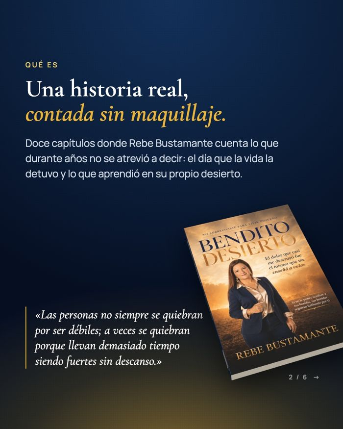

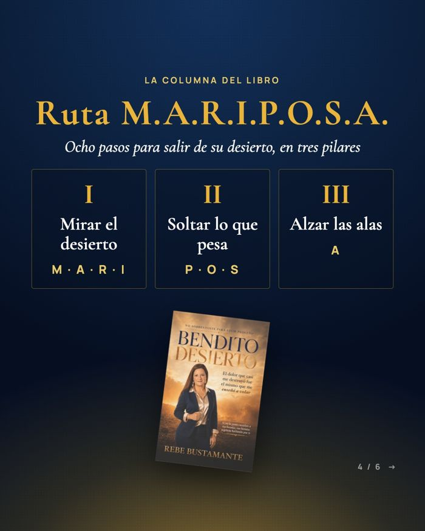
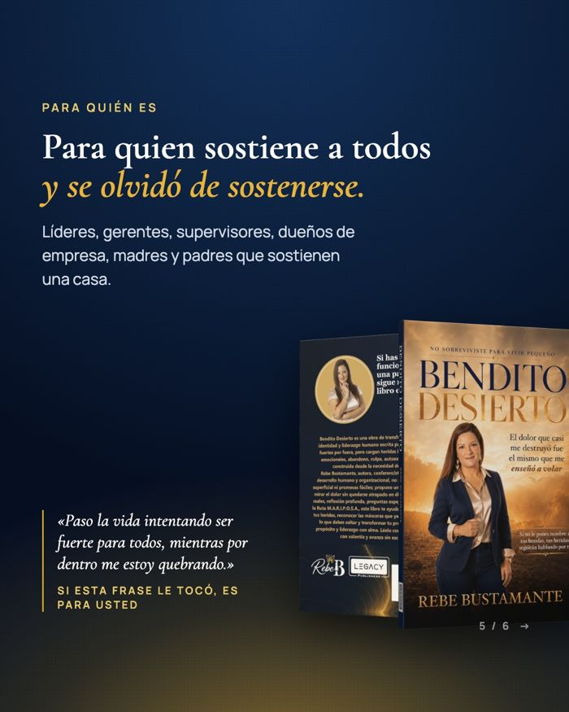
Deslice para ver las 6 láminas →
Carrusel · prelanzamiento · Martes 3 de noviembre · Publicado
Muy pronto: Bendito Desierto
Texto de la publicación
📖 ¡Muy pronto! «Bendito Desierto», el primer libro de Rebe Bustamante.
Una historia real sobre lo que pasa cuando la vida nos detiene, y sobre lo que se forma en ese desierto.
✨ Prelanzamiento: este sábado 7 de noviembre en VOCES CR 2026, donde Rebe tendrá una participación.
📚 Muy pronto, el lanzamiento oficial en las principales librerías y radios cristianas. Y se viene un evento especial que Rebe anunciará muy pronto. ¡Esté atento!
📲 ¿Quiere su ejemplar? Regístrese por WhatsApp al 8751-7643.
El libro acompaña; no reemplaza la ayuda profesional.
Deslice para ver las 9 láminas →
Carrusel · el libro con el personaje · Jueves 5 de noviembre · Publicado
Capítulo 1 · parte 1
Texto de la publicación
🧳 «Nadie veía la maleta completa.»
A los 15 años, Rebe vio a su familia irse detrás del vidrio de un aeropuerto y llegó a otra casa con una maleta que nadie veía. Steve Jobs y Maya Angelou también empezaron su vida con una separación que no eligieron. Y quizá usted también carga una.
✅ Reflexión para esta semana: ¿qué lleva en su maleta que los demás solo ven como «carácter»?
📲 «Bendito Desierto» es una guía para salir de su propio desierto. Sale muy pronto: lista de espera 🔗 en el perfil.
El libro acompaña; no reemplaza la ayuda profesional.
Deslice para ver las 6 láminas →
Carrusel · el libro · Sábado 7 de noviembre · Aprobado
¿De qué trata Bendito Desierto?
Texto de la publicación
¿De qué trata «Bendito Desierto»? 📖
Es una historia real, contada sin maquillaje: la de Rebe Bustamante, y la de cualquiera que pasa la vida intentando ser fuerte para todos.
Cada capítulo trae un tramo de su historia, un líder que atravesó su propio desierto, un ejercicio y una parada en la Ruta M.A.R.I.P.O.S.A.
✨ Prelanzamiento: sábado 7 de noviembre en VOCES CR 2026.
📚 Muy pronto, el lanzamiento oficial en las principales librerías y radios cristianas, y un evento especial que Rebe anunciará muy pronto.
📲 Regístrese por WhatsApp al 8751-7643.
👉 Guárdelo y compártalo con alguien que lo necesite.
El libro acompaña; no reemplaza la ayuda profesional.
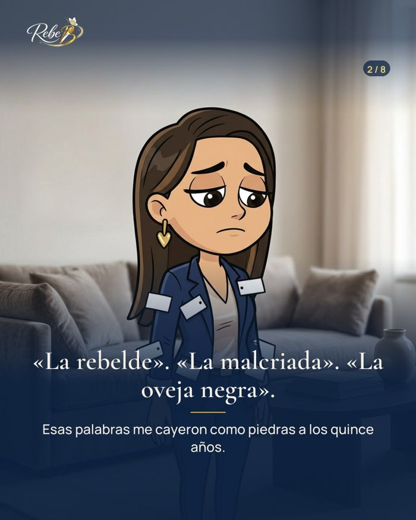
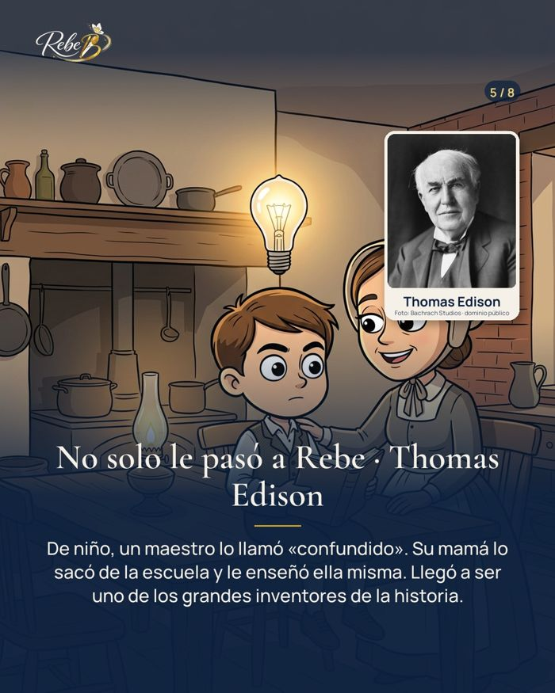
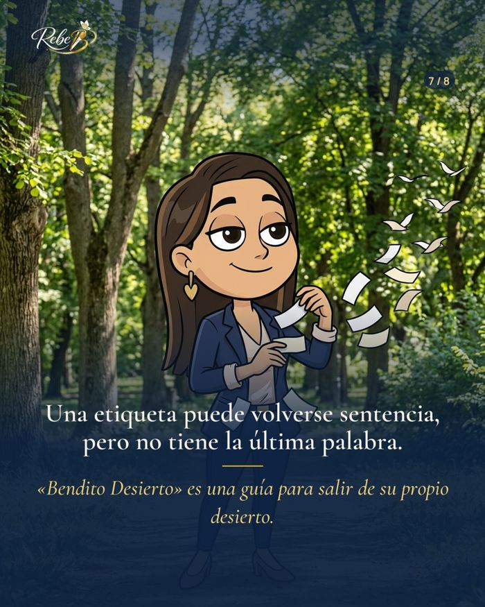
Deslice para ver las 8 láminas →
Carrusel · el libro con el personaje · Domingo 8 de noviembre · Aprobado
Capítulo 1 · parte 2
Texto de la publicación
🏷️ «Una etiqueta dicha sin pensar puede convertirse en sentencia.»
«La rebelde», «la malcriada», «la oveja negra»: así le decían a Rebe cuando en realidad estaba de duelo. A Edison lo llamaron «confundido». Y en las casas y en el trabajo seguimos poniendo etiquetas sin mirar la historia completa.
✅ Reflexión para esta semana: ¿qué etiqueta le pusieron a usted… y cuál le ha puesto usted a alguien?
📲 «Bendito Desierto» es una guía para salir de su propio desierto. Sale muy pronto: lista de espera 🔗 en el perfil.
El libro acompaña; no reemplaza la ayuda profesional.
Imagen · frase del libro · Lunes 9 de noviembre · Aprobado
Frase de Bendito Desierto
Texto de la publicación
✨ «Honro cada lágrima, porque cada una me enseñó a volar.»
— Rebe Bustamante, «Bendito Desierto»
No toda sequedad viene a destruirnos. A veces llega para formarnos.
📚 Muy pronto, el lanzamiento oficial en las principales librerías y radios cristianas. Y un evento especial que Rebe anunciará muy pronto.
📲 Regístrese por WhatsApp al 8751-7643.
Imagen · lanzamiento oficial · Viernes 13 de noviembre · En pausa
Ya disponible (fecha por confirmar)
Texto de la publicación
📖 Ya está aquí: «Bendito Desierto», el libro de Rebe Bustamante, en las principales librerías y radios cristianas.
Doce capítulos, doce líderes en el desierto y la Ruta M.A.R.I.P.O.S.A. para salir del suyo.
📲 Escríbanos por WhatsApp al 8751-7643 y le contamos cómo tener el suyo.
El libro acompaña; no reemplaza la ayuda profesional.
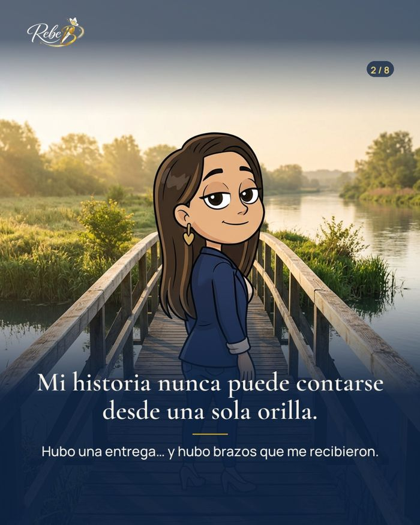
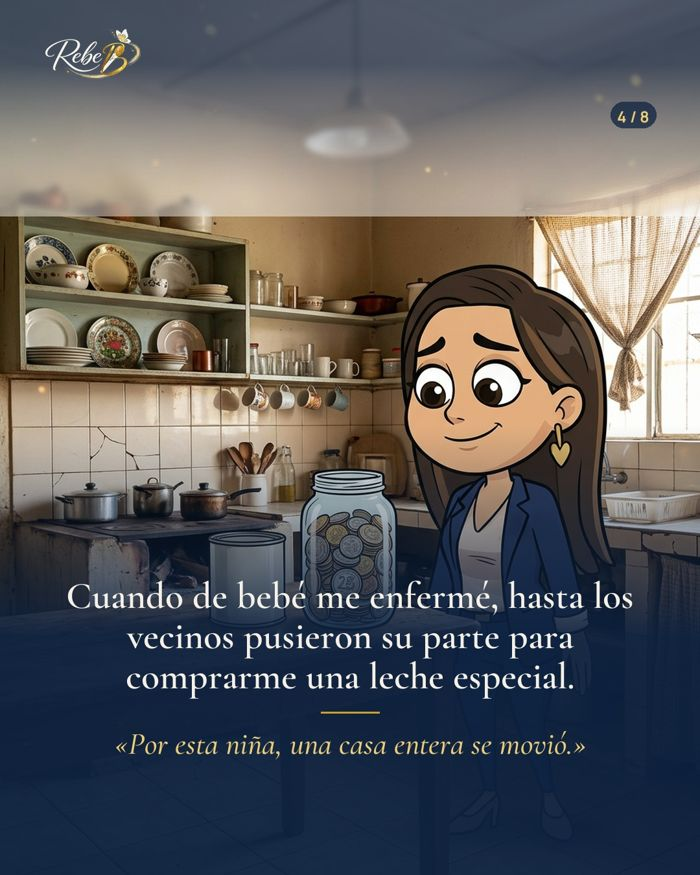
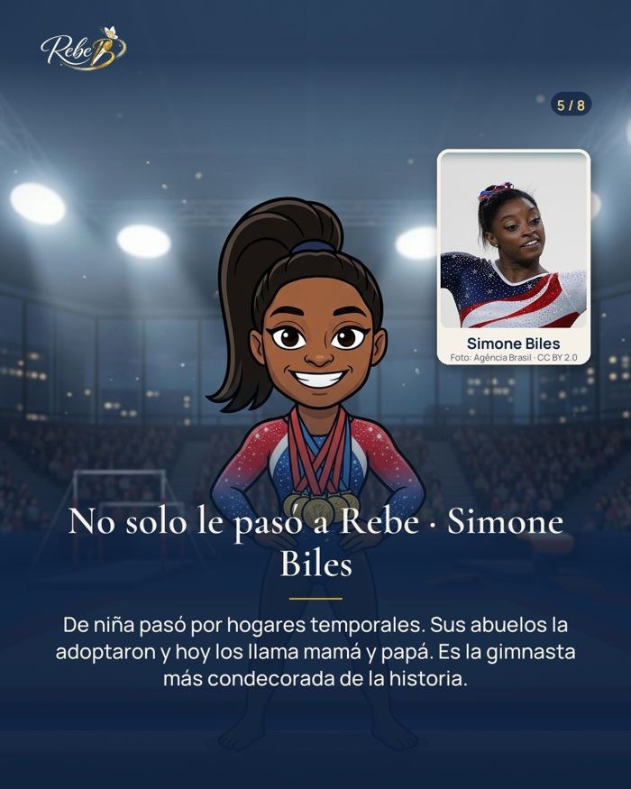
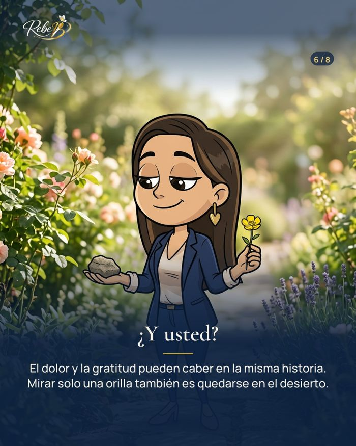
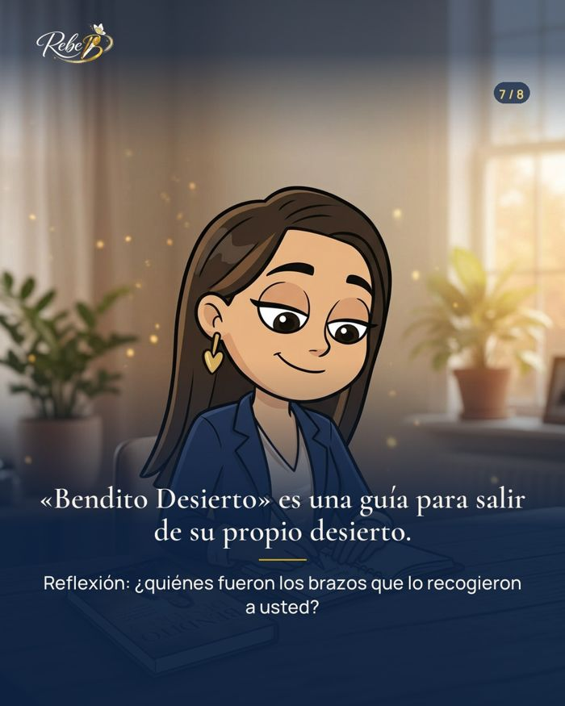
Deslice para ver las 8 láminas →
Carrusel · el libro con el personaje · Domingo 15 de noviembre · Por revisar
Capítulo 1 · parte 3
Texto de la publicación
🧵 «Fui entregada, sí; pero también fui recogida.»
Una historia dolorosa también tiene manos que nos sostuvieron: una Mami cosiendo de madrugada, un barrio entero ayudando a comprar una leche. Simone Biles lo sabe: sus abuelos la recogieron y hoy los llama mamá y papá.
✅ Reflexión para esta semana: ¿quiénes fueron los brazos que lo recogieron a usted? Si puede, dígales gracias.
📲 «Bendito Desierto» es una guía para salir de su propio desierto. Sale muy pronto: lista de espera 🔗 en el perfil.
El libro acompaña; no reemplaza la ayuda profesional.
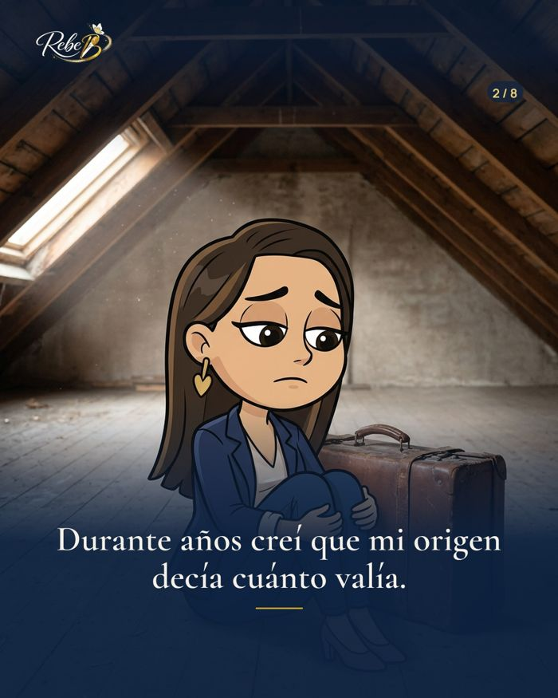
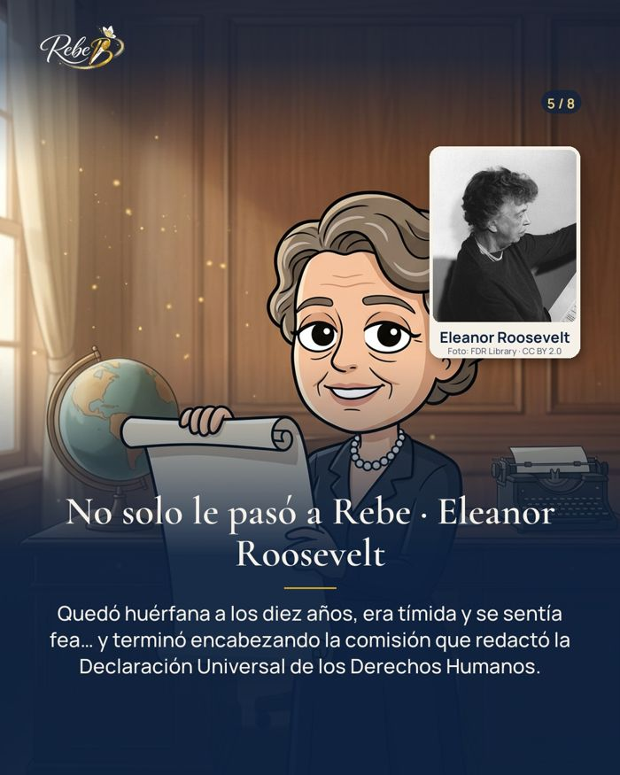
Deslice para ver las 8 láminas →
Carrusel · el libro con el personaje · Domingo 22 de noviembre · Por revisar
Capítulo 1 · parte 4
Texto de la publicación
✍️ «Mi herida merece ser reconocida, pero mi valor nunca estuvo en discusión.»
Así cierra el primer ejercicio del libro. La herida que no se mira sigue decidiendo por uno; cuando se nombra, empieza a perder autoridad. Eleanor Roosevelt quedó huérfana de niña y llegó a defender los derechos de todo el mundo.
✅ Ejercicio para esta semana: complete en un papel «La primera herida que marcó mi forma de verme fue…» y «A partir de ahí empecé a creer que…». No es para compartirlo: es para mirarlo. Si al escribir se remueve mucho, busque acompañamiento.
📲 «Bendito Desierto» es una guía para salir de su propio desierto. Sale muy pronto: lista de espera 🔗 en el perfil.
El libro acompaña; no reemplaza la ayuda profesional.